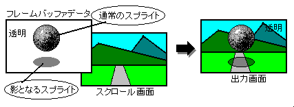
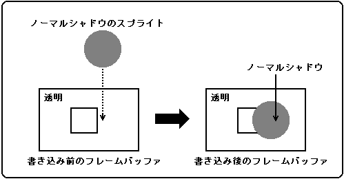
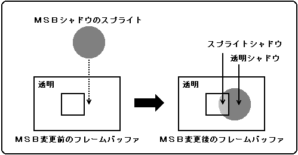

★
HARDWARE Manual★
VDP2ユーザーズマニュアル
★
HARDWARE Manual★
VDP2ユーザーズマニュアル
図14.1 シャドウ機能

図14.2 ノーマルシャドウのスプライトデータの書き込み

●スプライトタイプ０〜３、５の場合 ビット １５ ８ ７ ０ ┌─┬─┬─┬─┬─┬─┬─┬─┬─┬─┬─┬─┬─┬─┬─┬─┐ │−│−│−│−│−│１│１│１│１│１│１│１│１│１│１│０│ └─┴─┴─┴─┴─┴─┴─┴─┴─┴─┴─┴─┴─┴─┴─┴─┘ ●スプライトタイプ４、６の場合 ビット １５ ８ ７ ０ ┌─┬─┬─┬─┬─┬─┬─┬─┬─┬─┬─┬─┬─┬─┬─┬─┐ │−│−│−│−│−│−│１│１│１│１│１│１│１│１│１│０│ └─┴─┴─┴─┴─┴─┴─┴─┴─┴─┴─┴─┴─┴─┴─┴─┘ ●スプライトタイプ７の場合 ビット １５ ８ ７ ０ ┌─┬─┬─┬─┬─┬─┬─┬─┬─┬─┬─┬─┬─┬─┬─┬─┐ │−│−│−│−│−│−│−│１│１│１│１│１│１│１│１│０│ └─┴─┴─┴─┴─┴─┴─┴─┴─┴─┴─┴─┴─┴─┴─┴─┘ ●スプライトタイプＣ〜Ｆの場合 ビット １５ ８ ７ ０ ┌─┬─┬─┬─┬─┬─┬─┬─┬─┬─┬─┬─┬─┬─┬─┬─┐ │−│−│−│−│−│−│−│−│１│１│１│１│１│１│１│０│ └─┴─┴─┴─┴─┴─┴─┴─┴─┴─┴─┴─┴─┴─┴─┴─┘ ●スプライトタイプ８の場合 ビット １５ ８ ７ ０ ┌─┬─┬─┬─┬─┬─┬─┬─┬─┬─┬─┬─┬─┬─┬─┬─┐ │−│−│−│−│−│−│−│−│−│１│１│１│１│１│１│０│ └─┴─┴─┴─┴─┴─┴─┴─┴─┴─┴─┴─┴─┴─┴─┴─┘ ●スプライトタイプ９〜Ｂの場合 ビット １５ ８ ７ ０ ┌─┬─┬─┬─┬─┬─┬─┬─┬─┬─┬─┬─┬─┬─┬─┬─┐ │−│−│−│−│−│−│−│−│−│−│１│１│１│１│１│０│ └─┴─┴─┴─┴─┴─┴─┴─┴─┴─┴─┴─┴─┴─┴─┴─┘ 注：「−」部のビットは、ノーマルシャドウの判断には使用しません。
図14.4 スプライトシャドウと透明シャドウ

●スプライトシャドウ ビット １５ ８ ７ ０ ┌─┬─┬─┬─┬─┬─┬─┬─┬─┬─┬─┬─┬─┬─┬─┬─┐ │１│×│×│×│×│×│×│×│×│×│×│×│×│×│×│×│ └─┴─┴─┴─┴─┴─┴─┴─┴─┴─┴─┴─┴─┴─┴─┴─┘ ×は、指定したスプライトタイプにおけるドットカラーデータがノーマルシャドウの 条件を満たしていない限り、０でも１でも可。 ●透明シャドウ ビット １５ ８ ７ ０ ┌─┬─┬─┬─┬─┬─┬─┬─┬─┬─┬─┬─┬─┬─┬─┬─┐ │１│０│０│０│０│０│０│０│０│０│０│０│０│０│０│０│ └─┴─┴─┴─┴─┴─┴─┴─┴─┴─┴─┴─┴─┴─┴─┴─┘
15 | 14 | 13 | 12 | 11 | 10 | 09 | 08 |
- |
- |
- |
- |
- |
- |
- |
TPSDSL |
|---|
07 | 06 | 05 | 04 | 03 | 02 | 01 | 00 |
- |
- |
BKSDEN |
R0SDEN |
N3SDEN |
N2SDEN |
N1SDEN |
N0SDEN |
|---|
| N0SDEN | 1800E2H | ビット０ | NBG0用(またはRBG1用) |
| N1SDEN | 1800E2H | ビット１ | NBG1用(またはEXBG用) |
| N2SDEN | 1800E2H | ビット２ | NBG2用 |
| N3SDEN | 1800E2H | ビット３ | NBG3用 |
| R0SDEN | 1800E2H | ビット４ | RBG0用 |
| BKSDEN | 1800E2H | ビット５ | BACK用 |
| xxSDEN | 処 理 |
|---|---|
| 0 | シャドウ機能を使用しない（影を付けない） |
| 1 | シャドウ機能を使用する（影を付ける） |
| TPSDSL | 処 理 |
|---|---|
| 0 | 透明シャドウのスプライトを無効にする |
| 1 | 透明シャドウのスプライトを有効にする |
★
HARDWARE Manual★
VDP2ユーザーズマニュアル